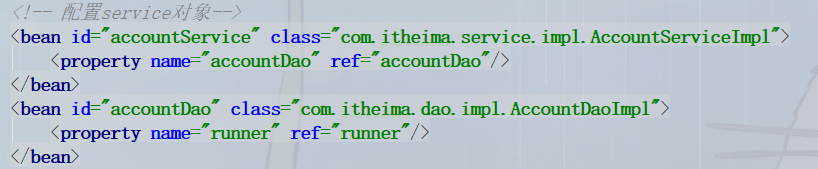

spring中ioc的常用注解
spring使用xml的方式实现方式（创建bean，并使用set方式注入数据）
* 曾经xml配置：
* <bean id="accountService" class="com.itheima.service.impl.AccountServiceImpl"
* scope="" init-method="" destory-method="">
* <property name="" value="" | ref=""></property>
* </bean>
使用注解的方式实现
spring注解类别
1、用于创建bean的注解--4个功能一样标签
* 对应bean标签
* @component:
* 作用：把当前类对象存入spring容器
* 属性：
* value：用于指定当前的id，默认当前类名，首字母小写
* @Controller:一般用在表现层
* @Service:一般用在业务层
* @Repository:一般用在持久层
* 以上三个注解他们的作用和属性与Component是一模一样。
* 他们三个是spring框架为我们提供明确的三层使用的注释，使我们的三层对象更加清晰
2、用于注入数据的注解--集合类型数据注入只能使用XML配置
对应XML中property标签
1、注入bean类型的数据
* @Autowired
* 作用：自动按照类型注入。只要容器有唯一的一个bean对象类型和要注入的类型匹配，就可以注入成功
* 如果spring容器(Map<String,Object>)中bean对象类型和要注入类型都不匹配，则报错
* 如果spring容器中存在多个bean对象类型和要注入类型匹配，则进一步匹配变量名和bean的id
* 如果变量名和容器中bean的id匹配，则注入成功
* 如果变量名和容器中bean的id均不匹配，则报错
* 出现位置：
* 可以是变量上，也可以是方法上
* 细节：
* 在使用注解注入时，set方法不是必须的
* @Qualifier
* 作用：在按照类型注入的（@Autowired）基础之上再按照名称注入。它在给类成员注入时不能单独使用，但是在给方法参数注入时可以
* 属性：
* value：用于指定注入bean的id
* @Resource
* 作用：直接按照bean的id注入，可以独立使用，不能用于方法参数上
* 属性：
* name：用于指定注入bean的id
使用自动注入的附加说明

2、注入基本数据类型和String类型的数据
* @Value
* 作用：用于注入基本类型和String类型的数据
* 属性：
* value：用于指定数据的值。它可以使用spring中的SqEL（spring的el表达式）
* SqEL的写法：${}
3、集合类型的数据注入只能通过XML实现
3、用于改变bean作用范围的注解
* 对应bean标签的scope属性
* @Scope
* 作用：用于指定bean的作用范围
* 属性：
* value：指定范围的取值。常用取值：singleton、prototype
4、声明bean的生命周期的注解
* 对应bean标签的init-method和destory-method属性
* @PreDestory
* 作用：用于指定销毁方法
* @PostConstruct
* 作用：用于指定初始化方法
使用注解实现
第一步：配置xml，告知spring创建容器时要使用的包
<?xml version="1.0" encoding="UTF-8"?>
<beans xmlns="http://www.springframework.org/schema/beans"
xmlns:xsi="http://www.w3.org/2001/XMLSchema-instance"
xmlns:context="http://www.springframework.org/schema/context"
xsi:schemaLocation="http://www.springframework.org/schema/beans
http://www.springframework.org/schema/beans/spring-beans.xsd
http://www.springframework.org/schema/context
http://www.springframework.org/schema/context/spring-context.xsd">
<!-- 告知spring在创建容器时要扫描的包，配置所需要的标签不是在beans的约束中-->
<context:component-scan base-package="com.itheima"/>
</beans>
第二步：在要添加的bean中加入注解
@Service(value = "accountService")
public class AccountServiceImpl implements IAccountService {
@Resource(name = "accountDao")
private IAccountDao accountDao;
@PostConstruct
public void init(){
System.out.println("初始化");
}
@PreDestroy
public void destory(){
System.out.println("销毁");
}
public void saveAccount() {
accountDao.saveAccount();
}
}
案例使用xml方式和注解方式实现单表的CURD操作，持久层选用dutils
纯XML方式配置bean

注解和XML混合方式配置bean


XML方式配置dbutils和c3p0来连接数据库(配合上述两种方式)
原因：由于不能修改jar包源码，所以不能使用注解来创建这些对象

改造基于注解的ioc案例，使用纯注解的方式实现，spring的一些新注解使用
主配置文件
/**
* @author fangjie
* @version 1.0
* @date 2020/2/17 20:20
* @description 该类是一个配置类，它的作用和bean.xml是一样的
* spring中的新注解
* @Configuration
* 作用：指定当前类是一个配置类，同时加入到容器中
* 细节：
* 1.当配置类作为AnnotationConfigApplicationContext对象创建的容器时，可以不写
2.当配置类被Import注解引入时，可以不写
3.作为参数引入时，各个配置类的地位一样；import注解引入时，使用import注解的配置类为主配置文件，被引入的是子配置文件
* @ComponentScan
* 作用：用于通过注解指定spring在创建容器时要扫描的包
* 属性：
* value：它和basePackages的作用一样，用于指定创建容器时要扫描的包
* 使用此注解就等同于在xml中配置：
* <context:component-scan base-package="com.itheima"/>
* @Bean
* 作用：用于把当前方法的返回值作为bean对象存入spring的ioc容器中
* 属性：
* name：用于指定bean的id。当不写时，默认值是当前方法的名称
* value：等同于value
* 细节：
* 当我们使用注解配置方法时，如果方法有参数，spring框架会去容器中查找有没有可用的bean对象。
* 查找方式和Autowired注解作用一样。
* @Import
* 作用：用于导入其他的配置类
* 属性：
* value：用于指定其他配置类的字节码，有Import注解的类就是父配置类，导入的都是子配置类
* @PropertySource
* 作用：用于指定properties文件的位置
* 属性：
* value：指定文件的名称和路径
* 关键字：classpath，表示类路径下
*/
//@Configuration
@ComponentScan(basePackages = "com.itheima")
@Import(JdbcConfig.class)
@PropertySource(value = "classpath:jdbcConfig.properties")
public class SpringConfiguration {
}
子配置文件
/**
* @author fangjie
* @version 1.0
* @date 2020/2/17 20:48
* @description 和spring连接数据库相关的配置
*/
public class JdbcConfig {
@Value("${jdbc.driver}")
private String driver;
@Value("${jdbc.url}")
private String url;
@Value("${jdbc.username}")
private String username;
@Value("${jdbc.password}")
private String password;
/**
* 用于创建QueryRunner对象
* @param dataSource
* @return
*/
@Bean(value = "runner")
@Scope(value = "prototype")
public QueryRunner createQueryRunner(DataSource dataSource) {
return new QueryRunner(dataSource);
}
/**
* 创建数据源
* @return
*/
@Bean(name = "dataSource")
public DataSource createDataSource() {
ComboPooledDataSource dataSource = new ComboPooledDataSource();
try {
dataSource.setDriverClass(driver);
dataSource.setJdbcUrl(url);
dataSource.setUser(username);
dataSource.setPassword(password);
return dataSource;
} catch (PropertyVetoException e) {
throw new RuntimeException(e);
}
}
}
关于方法参数注入

spring和Junit的整合
1.应用程序的入口
main方法
2.junit单元测试中，没有main方法也能执行
- junit集成了一个main方法
- 该方法会判断当前测试类中哪些方法有@Test注解，然后执行
3.junit并不知道spring框架的存在，所以不会自动读取配置文件，创建spring核心容器
/**
* @author fangjie
* @version 1.0
* @date 2020/2/17 14:16
* @description 使用Junit单元测试，测试我们的配置
* Spring整合Junit的配置步骤
* 1.导入spring整合junit的坐标
* 2.使用Junit提供的一个注解把原有的main方法替换了，替换成spring提供的
* @Runwith 3.告知spring的运行器，spring和ioc创建是基于xml还是注解，并且说明位置
* @ContextConfiguration locatoins:指定xml文件的位置，加上classpath关键字，表示在类路径下
* classes：指定注解类所在位置
* 当使用spring 5.x版本的时候，要求junit的jar包必须是4.12
*/
@RunWith(SpringJUnit4ClassRunner.class)
@ContextConfiguration(classes = SpringConfiguration.class)
public class AccountServiceTest {
@Resource(name = "accountService")
private IAccountService service;
@Test
public void testFindAll() {
//3.执行方法
List<Account> accounts = service.findAllAccount();
for (Account account : accounts) {
System.out.println(account);
}
}
}